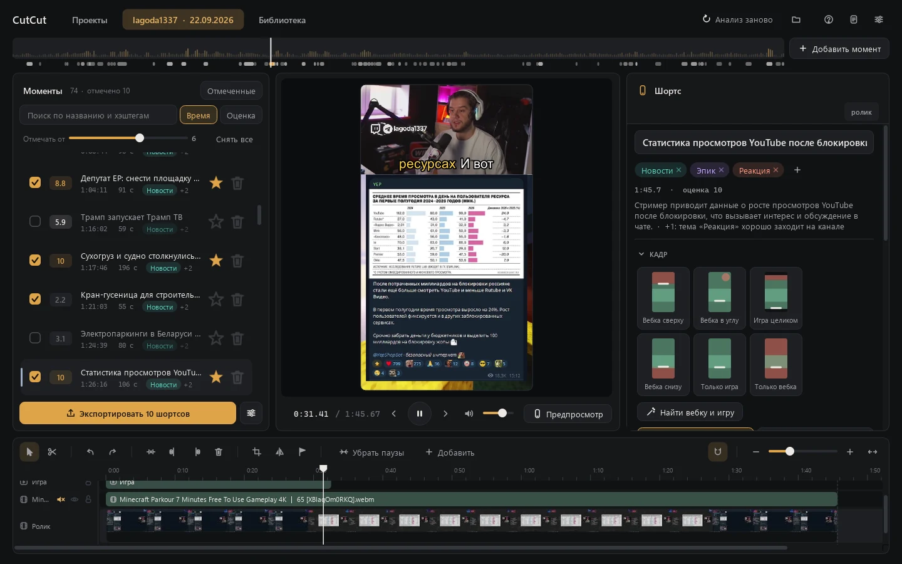
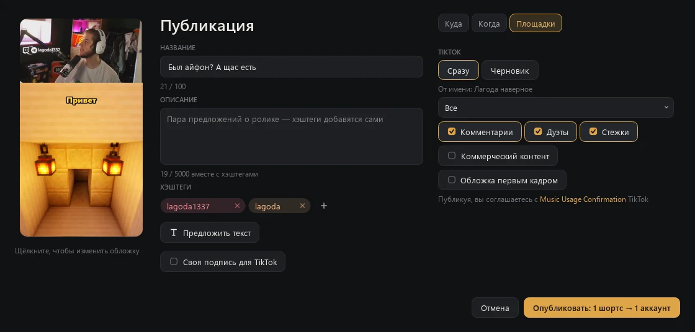

Guide
From a stream recording to a published short. The interface is in Russian: button names are given in English with the Russian label in brackets.
- Install
- Start a project
- Review the moments
- Edit a short
- Preview and export
- Connect TikTok and YouTube
- Publish
- Statistics
- Disconnect an account
1. Install
Download the installer from the Download page and run it. The installer is not signed yet, so Windows may warn about it: press More info → Run anyway. It installs CutCut without administrator rights, then downloads ffmpeg, the local model runtime and the models (about 22 GB) in a console window. If the download is interrupted, run CutCut — проверить и докачать (check and download) from the Start menu: it downloads only what is missing.
Choose an installation folder on a drive with plenty of space: projects with streams and finished shorts are kept next to the app.
On the first start CutCut asks for an activation code: it shows the request code of your computer, which you send as described in Activation.
2. Start a project
On the Projects (Проекты) screen, paste a link to a Twitch recording or channel and press Start (Начать), or drop an mp4, ts or mkv file onto the window. A recording downloads in parts, and each part is analyzed as soon as it arrives. A channel link records the live stream.
The task card in the bottom-right corner shows the progress and how long the analysis has left. When it finishes, the project opens by itself.
3. Review the moments
The list on the left shows the moments CutCut found, with a score from 1 to 10, the length and the topic. The strip at the top is a map of the whole stream: chat activity, loudness and where the moments are.
- Tick the moments you want as shorts. The tick button next to Export (Экспортировать) shows how many are ticked; its menu has Mark from (Отмечать от), which ticks every moment above a score, and Uncheck all (Снять все).
- Star your favourites; sort by time or by score with the clock and flame icons above the list.
- Search (the magnifier or Ctrl+F) looks through titles, hashtags and everything said on the stream. Click a place in the speech to jump there; Add (Добавить) makes a moment around it, Open (Открыть) goes to the moment it is in.
- Drag a moment onto its neighbour to merge them, or add your own with Add moment (Добавить момент).

4. Edit a short
The middle of the screen shows the short exactly as it will look on a phone; the timeline below shows the short's time.
- Frame (Кадр): pick a layout — webcam on top, webcam in the corner, screen only and others. Find webcam and screen (Найти вебку и экран) detects them on screen.
- Subtitles: choose a style and position; select a line to fix its words.
- Timeline: split with the blade, drag the edges to trim, change the speed of a piece, Remove pauses (Убрать паузы) cuts the silence.
- Add (Добавить): text, an image, a video, a piece of the stream, music or a Blur (Размытие) over something to hide. Music gets quieter under speech by itself.
- Right-click a layer in the frame or on the timeline: shape, soft edges and shadow, how it appears and disappears, alignment to the frame. Exact values are in the panel on the right.
5. Preview and export
Preview (Предпросмотр) renders the short in full quality in a phone frame. Export (Экспортировать) renders
every ticked moment into the shorts folder next to the app (another folder can be chosen in
Settings → Shorts (Настройки → Шортсы)) and adds them to the Library (Библиотека).
If a similar short was already exported, CutCut asks whether to replace it, keep both or skip it.
6. Connect TikTok and YouTube
Open Library → Accounts (Аккаунты).
- TikTok: press Add account (Добавить аккаунт). Your browser opens TikTok's login page; sign in and allow access. The account appears in the list with its name and avatar.
- YouTube: press Add channel (Добавить канал), sign in with Google and choose the channel.
Tokens are stored only on your computer, encrypted for your Windows user.
7. Publish

In the Library select one or more shorts and press Publish (Опубликовать).
- Where (Куда): tick the accounts. When (Когда): now, or at a time — several shorts can be spread out, and CutCut suggests the hours when your videos do best.
- Edit the title, description and hashtags. Suggest text (Предложить текст) drafts them for you; the cover is changed by clicking it.
- Platforms (Площадки) → TikTok: Post now (Сразу) or Draft (Черновик). For a direct post choose who can view the video, allow or turn off comments, duets and stitches, and mark commercial content if the video promotes you or a partner.
- Press Publish. By publishing you agree to TikTok's Music Usage Confirmation, shown above the button.
The upload runs in the task card in the bottom-right corner with its progress. A draft goes to your TikTok inbox, and the caption is copied to the clipboard so you can paste it in the TikTok app.
8. Statistics
Library → Statistics (Статистика) shows views, likes, comments and shares of the shorts you published, a chart by day, the hours when your videos do best and, for YouTube, where viewers leave. CutCut updates the numbers regularly while it is running.
9. Disconnect an account
In Library → Accounts press Remove (Удалить) next to the account: its tokens are deleted from your computer. To revoke CutCut's access completely, also remove it in TikTok under Settings and privacy → Security → Manage app permissions, or at myaccount.google.com/connections for Google.